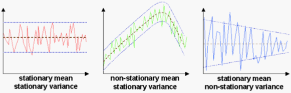
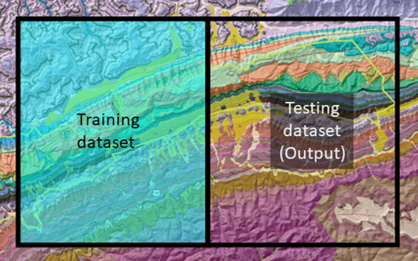

Dealing with Spatial and Temporal Data#
import pandas as pd
import matplotlib.pyplot as plt
from sklearn.preprocessing import MinMaxScaler
from sklearn.metrics import mean_squared_error
from sklearn.linear_model import LinearRegression
from sklearn.neighbors import KNeighborsRegressor
Spatial/temporal collinearity เป็นการที่ feature หนึ่งมี correlation กับตำแหน่ง/เวลา
สำหรับข้อมูลที่มี spatial/temporal collinearity การทำ splitting อย่างสุ่ม จะได้ test set ที่คล้ายกับ training set มากเกินไป ทำให้ model performance สูงเกินจริง ดังนั้นเราจะทำ splitting โดยแบ่งข้อมูลเป็นก้อนใหญ่ ๆ ไปเลย วิธีนี้ใช้ได้ดีหากข้อมูล stationary (ข้อมูลที่มี mean และ variance ไม่เปลี่ยนไปตามตำแหน่งหรือเวลา)

สำหรับ spatial data เราจะแบ่งพื้นที่ออกเป็น 2 พื้นที่ใหญ่ ๆ ข้อมูลในพื้นที่หนึ่งถูกใช้เป็น training set และข้อมูลในอีกพื้นที่หนึ่งถูกใช้เป็น test set

สำหรับ temporal data เราจะแบ่งเวลาออกเป็น 2 ช่วงเวลาใหญ่ ๆ ข้อมูลในช่วงเวลาที่เก่ากว่าถูกใช้เป็น training set และข้อมูลในช่วงเวลาที่ใหม่กว่าถูกใช้เป็น test set
Cross validation สามารถทำได้ แต่ซับซ้อนมาก
สำหรับข้อมูลที่ไม่ stationary เราต้อง detrend (เอา trend ไปลบกับข้อมูลเดิม) ได้ model residual ก่อนเอาไป train เสร็จแล้วจึงเอา trend บวกกลับเข้าไป
# Thanks to Prof. Michael Pyrcz for data
# Import data and drop duplicates
data = pd.read_csv("../data/poro-perm.csv").drop_duplicates()
data
| X | Y | Facies | Porosity | Perm | AI | |
|---|---|---|---|---|---|---|
| 0 | 100.0 | 900.0 | 1.0 | 0.100187 | 1.363890 | 5110.699751 |
| 1 | 100.0 | 800.0 | 0.0 | 0.107947 | 12.576845 | 4671.458560 |
| 2 | 100.0 | 700.0 | 0.0 | 0.085357 | 5.984520 | 6127.548006 |
| 3 | 100.0 | 600.0 | 0.0 | 0.108460 | 2.446678 | 5201.637996 |
| 4 | 100.0 | 500.0 | 0.0 | 0.102468 | 1.952264 | 3835.270322 |
| ... | ... | ... | ... | ... | ... | ... |
| 256 | 780.0 | 669.0 | 1.0 | 0.175642 | 629.138468 | 3140.692477 |
| 257 | 50.0 | 779.0 | 1.0 | 0.091725 | 0.656564 | 6197.834381 |
| 258 | 430.0 | 589.0 | 1.0 | 0.139057 | 13.124324 | 3981.017070 |
| 259 | 130.0 | 489.0 | 0.0 | 0.099351 | 8.681915 | 4954.088777 |
| 260 | 280.0 | 929.0 | 1.0 | 0.129129 | 73.611975 | 4235.867740 |
261 rows × 6 columns
# Here I only want to illustrate the spatial variability of porosity of sand.
# sand มี Facies=1 และ shale มี Facies=0
# Required features
sand = data[data["Facies"] == 1]
x = sand['X'].values
y = sand['Y'].values
porosity = sand["Porosity"].values
permeability = sand["Perm"].values # will be used later
# Plot
fig, ax = plt.subplots(figsize=(8, 6))
sc = ax.scatter(x, y, c=porosity, s=20)
ax.set(xlabel="X Coordinates", ylabel="Y Coordinates", title="Porosity", xlim=(0, 1000))
plt.colorbar(sc);
# Explore horizontal (X) trend of porosity
# We can see the a clear correlation from the plot below
# Use datapoints with Y = 400-600
corr_df = sand[(sand['Y'] > 400) & (sand['Y'] < 600)][['X', "Porosity", "Perm"]]
# Average their porosity if they have the same X
corr_df = corr_df.groupby('X').mean().reset_index()
# Normalise X and porosity
corr_df = pd.DataFrame(MinMaxScaler().fit_transform(corr_df).T, corr_df.columns).T
# Plot
fig, ax = plt.subplots(figsize=(10, 5))
ax.scatter(corr_df['X'], corr_df["Porosity"])
ax.set(xlabel="Normalised X", ylabel="Normalised porosity", xlim=(0, 1), ylim=(0, 1));
# Try to predict permeability from porosity, ignoring spatial collinearity
# Geographic train-test split (first 30% is test set)
boundary = round(0.3*len(corr_df))
X_test = corr_df["Porosity"][:boundary].values.reshape(-1, 1)
y_test = corr_df["Perm"][:boundary].values
X_train = corr_df["Porosity"][boundary:].values.reshape(-1, 1)
y_train = corr_df["Perm"][boundary:].values
# Predict using a KNN regressor
knn = KNeighborsRegressor().fit(X_train, y_train)
y_pred = knn.predict(X_test)
# Show the prediction result and error
error = mean_squared_error(y_test, y_pred)*100
fig, ax = plt.subplots(figsize=(4, 3))
ax.scatter(corr_df['X'][:boundary], y_test, label="Measured")
ax.scatter(corr_df['X'][:boundary], y_pred, label="Predicted")
ax.set(
title=f"Measured and predicted permeability\n(Relative error = {error:.1f}%)",
xlabel="Normalised X",
ylabel="Normalised permeability",
ylim=(0, 1))
ax.legend();
# Try to predict permeability from porosity, taking spatial collinearity into account
# Find the trend using a linear regressor
trend_poro = LinearRegression().fit(corr_df[['X']], corr_df["Porosity"])
trend_perm = LinearRegression().fit(corr_df[['X']], corr_df["Perm"])
# Detrend
corr_df['Poro_detrended'] = corr_df["Porosity"] - trend_poro.predict(corr_df[['X']])
corr_df['Perm_detrended'] = corr_df["Perm"] - trend_perm.predict(corr_df[['X']])
# Plot detrended porosity against X
fig, ax = plt.subplots(figsize=(10, 5))
ax.scatter(corr_df['X'], corr_df["Poro_detrended"])
ax.set(xlabel="Normalised X", ylabel="Detrended normalised porosity", xlim=(0, 1), ylim=(-0.5, 0.5));
# Geographic train-test split (first 30% is test set)
X_test_detrended = corr_df["Poro_detrended"][:boundary].values.reshape(-1, 1)
y_test_detrended = corr_df["Perm_detrended"][:boundary].values
X_train_detrended = corr_df["Poro_detrended"][boundary:].values.reshape(-1, 1)
y_train_detrended = corr_df["Perm_detrended"][boundary:].values
# Predict using a KNN regressor
knn_detrended = KNeighborsRegressor().fit(X_train_detrended, y_train_detrended)
y_pred_detrended = knn_detrended.predict(X_test_detrended)
# Restore the trend (y = y_detrended (c) + mx)
y_pred = y_pred_detrended + trend_perm.coef_[0]*corr_df['X'][:boundary]
# Show the prediction result and error
error = mean_squared_error(y_test, y_pred)*100
fig, ax = plt.subplots(figsize=(4, 3))
ax.scatter(corr_df['X'][:boundary], y_test, label="Measured")
ax.scatter(corr_df['X'][:boundary], y_pred, label="Predicted")
ax.set(
title=f"Measured and predicted permeability\n(Relative error = {error:.1f}%)",
xlabel="Normalised X",
ylabel="Normalised permeability",
ylim=(0, 1))
ax.legend();